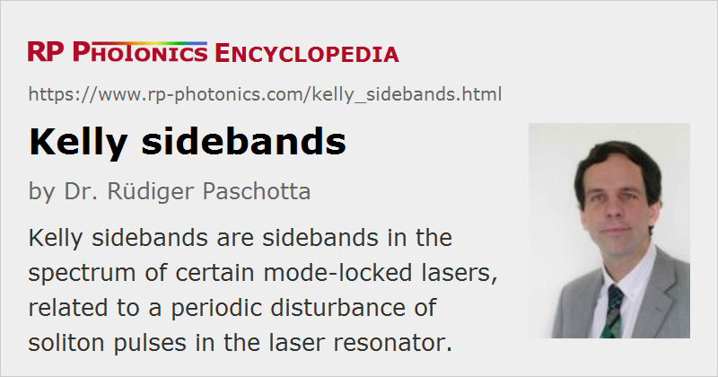

Kelly Sidebands
Definition: sidebands in the spectrum of certain mode-locked lasers, related to a periodic disturbance of soliton pulses in the laser resonator
German: Kelly-Seitenbänder
How to cite the article; suggest additional literature
Author: Dr. Rüdiger Paschotta
In a soliton mode-locked laser, a soliton pulse is circulating in the laser resonator. If the effects of chromatic dispersion and nonlinearities per resonator round trip are weak, the pulse essentially experiences their average values plus some weak periodic disturbance due to the discrete nature of dispersion and nonlinearity. Additional disturbances can result from the periodically occurring losses and amplification in the laser resonator.
The mentioned periodically occurring disturbances couple the soliton to a copropagating dispersive wave. This often does not have strong effects, since the relative phase of soliton and dispersive wave is constantly changing due to the nonlinearity which is experienced only by the soliton. However, particularly in fiber lasers a kind of resonant coupling (or quasi-phase matching) can occur, when for some optical frequencies the relative phase of soliton and dispersive wave changes by an integer multiple of 2π per resonator round trip. This results in the formation of narrow peaks superimposed on the soliton spectrum (see Figure 1). Such peaks are called Kelly sidebands. From their positions in the optical spectrum, information on the spectral profile of the chromatic dispersion of the fiber can be retrieved.
Kelly sidebands are usually not observed in mode-locked bulk lasers, but often in soliton fiber lasers. This is because the intracavity nonlinearity and dispersion is much larger in fiber lasers (→ mode-locked fiber lasers). The nonlinear phase shift per resonator round trip in a soliton fiber laser is inversely proportional to the pulse duration. Therefore, Kelly sidebands become much more pronounced as the pulse duration is decreased e.g. by increasing the pulse energy. When the laser is driven too far into this regime, the soliton pulses become unstable. Strong Kelly sidebands thus indicate that the pulse duration is near the minimum possible value.
For mitigating problems with excessive Kelly sidebands, one should try to reduce the nonlinear phase shift per resonator round-trip, so that the disturbance of the circulating soliton is reduced. For example, one may operate the laser with a longer pulse duration by increasing the amount of anomalous chromatic dispersion, or reduce the pulse energy by pumping the laser less strongly.
Questions and Comments from Users
Here you can submit questions and comments. As far as they get accepted by the author, they will appear above this paragraph together with the author’s answer. The author will decide on acceptance based on certain criteria. Essentially, the issue must be of sufficiently broad interest.
Please do not enter personal data here; we would otherwise delete it soon. (See also our privacy declaration.) If you wish to receive personal feedback or consultancy from the author, please contact him e.g. via e-mail.
By submitting the information, you give your consent to the potential publication of your inputs on our website according to our rules. (If you later retract your consent, we will delete those inputs.) As your inputs are first reviewed by the author, they may be published with some delay.
Bibliography
| [1] | S. M. Kelly, “Characteristic sideband instability of periodically amplified average soliton”, Electron. Lett. 28 (8), 806 (1992), doi:10.1049/el:19920508 |
| [2] | N. J. Smith, K. J. Blow, and I. Andonovic, “Sideband generation through perturbations to the average soliton model”, IEEE J. Lightwave Technol. 10 (10), 1329 (1992), doi:10.1109/50.166771 |
| [3] | J. P. Gordon, “Dispersive perturbations of solitons of the nonlinear Schroedinger equation”, J. Opt. Soc. Am. B 9 (1), 91 (1992), doi:10.1364/JOSAB.9.000091 |
| [4] | M. L. Dennis and I. N. Duling III, “Experimental study of sideband generation in femtosecond fiber lasers”, IEEE J. Quantum Electron. 30 (6), 1469 (1994), doi:10.1109/3.299472 |
| [5] | D. J. Jones, Y. Chen, H. A. Haus, and E. P. Ippen, “Resonant sideband generation in stretched-pulse fiber lasers”, Opt. Lett. 23 (19), 1535 (1998), doi:10.1364/OL.23.001535 |
See also: solitons, mode locking, soliton mode locking, dispersive wave, dispersion, quasi-phase matching
and other articles in the category light pulses
|  |
If you like this page, please share the link with your friends and colleagues, e.g. via social media:
These sharing buttons are implemented in a privacy-friendly way!